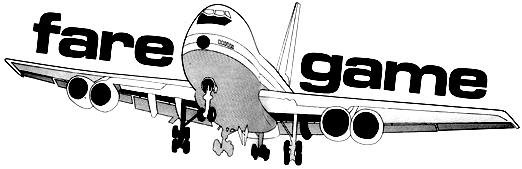

YES IT IS POSSIBLE TO FLY ACROSS THE COUNTRY ABSOLUTELY FREE ON A MAJOR AIRLINE. YOU PROBABLY WON'T MAKE IT HAPPEN EVERY TIME YOU TRY... BUT YOU'RE ALMOST CERTAIN TO FLY NO-CHARGE ONCE IN A WHILE IF YOU KNOW THE RULES OF THE
It was Friday night, six days before Christmas, when my wife and I suddenly realized we could leave Oregon for the midwest four days sooner than we had planned . . . if we could get our flight reservations changed. We called the airline. The only opening they had between then and Christmas was Saturday morning at eight. We started packing.
After a restful three hours of sleep we headed for the bus depot to catch the 4:30 a.m. service from Eugene to Portland. The bus was late and we reached downtown Portland an hour behind schedule with only thirty minutes to catch our plane. We grabbed a cab, arrived at the airport five minutes before takeoff . . . and ran right into another delay because of a mixup with our reservations! We got that squared away and dashed down the corridor to our gate. The last few passengers were being checked in. We had made it.
We handed the agent our tickets . . . and he told us there was no more room on the plane! Of all the . . . "But", he went on, "you will receive confirmed reservations on the next scheduled flight plus a pair of free meals while you are waiting plus a FULL REFUND of your fares to Kansas City."
Now you're talking. We ,got paid over one hundred and fifty dollars for waiting six hours in the Portland airport . . . and that's how we stumbled onto one of the little-known facts of traveling. It is possible to fly across the country free. How? I'll get to that-but first I have to explain a little about airline reservations and how they work.
As you probably know, it's possible to make a reservation on any major airline without paying a penny. In fact, almost all reservations are made by phone and paid for later, either through the mail or at the check-in desk shortly before takeoff. The reservation itself costs absolutely nothing and, as a result, John Q. Customer has nothing to lose by failing to claim his reserved seat on a flight.
The airline, on the other hand, does lose something if John doesn't show: His money. Since every noshow means less profit (or more loss) for the airlines and since John Q. fails to claim his reserved seat exasperatingly often, the lines have devised a clever scheme to compensate for Mr. Customer's unscrupulous behavior. They simply reserve more seats (sometimes) than they actually have available on a plane. Then, when old John doesn't appear to pay for and claim his seat, they still have a full plane and a full pocket.
This is a wonderous plan indeed but (and here's the part you've been waiting for) sometimes it backfires. If everybody who has a reservation shows up for a flight that was oversold . . . somebody, quite obviously, will have to stay behind. And that somebody could get pretty angry at the airline. The lines, therefore, are most pleased to soothe Mr. Leftover's temper by paying his way on the next scheduled flight. That means he flies free.
How often does this happen? That depends. I've asked a number of employees of different airlines and gotten a number of different answers. One representative told me his company never intentionally oversells a flight but that the computer sometimes makes a "mistake." A man from a second airline told me his firm monitors flights for a long period and then, based on the average number of no-shows (remember John Q.?), oversells them regularly. These phantom reservations range from zero to five percent of the total number of seats on the plane and average about three percent.
Still another fellow tells me that the oversells made by his airline depend on the time of year, the region, the number of the flight and the computer. The vacation seasons (July and August), the well-traveled holidays (Christmas, Independence Day, Easter) and the to and from school times, for example, are almost always sold out and-as a result-more likely to be oversold. Larger airports make a greater number of oversells than smaller fields. More phantom seats are sold in college towns at certain times because a lot of students make false reservations at term breaks in an effort to guarantee themselves a place on stand-by. The airlines (they're on to you, kids!) compensate by overselling these flights by a larger percentage. Thus, the schedules out of Eugene-the home of the University of Oregon-may be oversold by substantial numbers the first couple of days of each school break.
The fact that a flight is oversold, of course, does not guarantee that too many people will actually show up. An airline representative at the Eugene airport (a small field) estimates that only about one flight in twenty can not handle all its potential passengers during the busy seasons. This ratio may be much higher at a major airfield.
How can you be sure that the guy who gets the refund-if there is one-is you? By making sure you're the last person (before the stand-bys) to take your ticket to the boarding desk at the gate.
It doesn't matter how far in advance you make your reservation. If the flight is full, you win . . . and the airline will be pleased it's you instead of a belligerent businessman who would have missed an important meeting. If the plane isn't full, the worse that can happen is you'll probably get a lousy seat . . . but you'll still be able to see out the window if you stretch a little.
You may scoff at the odds but those odds are much lower than you're likely to find in any other competition for a prize worth up to $200. Your investment is nothing but the possible loss of a few hours . . . and you make that only after you've been declared a winner!
Now for the thrilling conclusion to our story:
Equipped with our new-found knowledge, we cowered in the back of the boarding line for our return flight from Kansas City in early January. Alas, they had room for us, so we tried the same tactic when changing planes in Denver. This time our luck was better. The two of us, and five other people, were left behind and given first class reservations on a plane that left later that day. Surprisingly enough, we were the only ones who didn't seem to mind . . . and why should we? We were making the complete round trip from Portland to Kansas City for the cost of a one way fare from Kansas City to Denver.
Good luck on your next flight.
|
 |
|
|